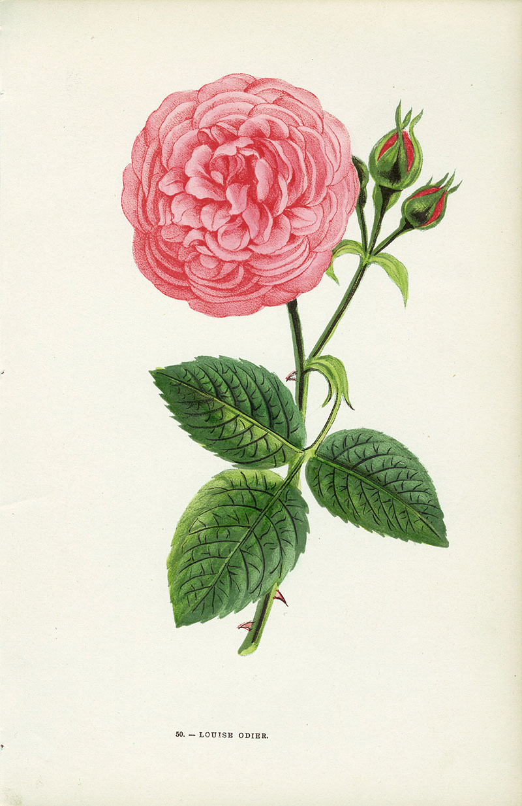

L2-L3 · The Beauty of a Handwritten Moment

There is something special about receiving a handwritten postcard. Unlike a text message that can be read and forgotten within seconds, a postcard is something you can hold onto. The handwriting, the stamp, and even the imperfections make it feel personal and unique. Someone took a moment out of their day to choose a card, write a message, and send a little piece of their world to someone else.
"Sometimes the smallest gestures become the most meaningful memories."
Sending postcards is also a way to romanticize everyday life. It encourages us to notice the little things: a beautiful building, a quiet afternoon at a cafe, or a place that reminds us of someone we love. Not every postcard needs to come from an exciting vacation or a faraway destination. Sometimes, the most meaningful messages come from ordinary moments that we choose to make special.
L4-L5 · A Little Piece of Somewhere

Postcards have a way of capturing the feeling of a place in a way that photographs alone sometimes cannot. Whether they feature colorful illustrations, historic landmarks, or quiet little streets, each postcard tells a story about somewhere in the world. They become tiny souvenirs that can travel across oceans, connecting people who may be miles apart.
Part of the charm of postcards is their individuality. Some have faded colors and worn edges, while others feature bold artwork or beautiful typography. Collecting postcards can feel like collecting pieces of art, each one representing a different place, memory, or moment in time. Displayed on a wall, tucked into a journal, or saved in a keepsake box, postcards can turn ordinary memories into something worth holding onto.
Even in a digital world, postcards offer something that cannot be recreated through a screen. They carry the handwriting of someone we care about, the marks of their journey, and the excitement of receiving something unexpected in the mail. Perhaps that is what makes them so meaningful. A postcard is more than a picture of a destination. It is a reminder that someone, somewhere, was thinking of you.
L6-L7 · The Art of Slowing Down
In a world where almost everything happens instantly, writing a postcard gives us a reason to slow down. Choosing the perfect card, finding the right words, and taking the time to send it can turn a simple activity into a meaningful ritual. It encourages us to be intentional with our time and the connections we create.
Bringing postcards into everyday life does not require traveling to somewhere new. A postcard from a local bookstore, museum, or favorite neighborhood shop can be just as meaningful as one from another country. Sending a little note to a friend, family member, or someone you have not spoken to in a while is a small way to remind them that they matter.
Perhaps the beauty of postcards is not just in the places they represent, but in the moments they encourage us to appreciate. They remind us to look a little closer, notice the beauty around us, and find romance in the ordinary. Sometimes, all it takes is a stamp, a few handwritten words, and the thought of someone special to turn an everyday moment into a memory.
Postcards from Ireland
During my six weeks studying abroad in Ireland, I found myself collecting postcards everywhere I went. Every city, little shop, and place I visited became an opportunity to find another postcard. Some were for my family and friends back home, while others I kept for myself as little reminders of my adventures. One of my favorite memories was taking all the postcards I had collected to my favorite park in Dublin, finding a peaceful spot, and sitting down to write each one.
Even the process of sending them became part of the experience. I had to find a post office to buy stamps and then track down a post box on campus to finally send them on their way. It was not the quickest or easiest way to communicate with the people I loved, but that was what made it special. I realized that sending postcards was not just about making someone else's day. It was also something I was doing for myself. Taking the time to choose, write, and mail each postcard became a beautiful little ritual. It was one of my favorite ways to romanticize my life living in Ireland.